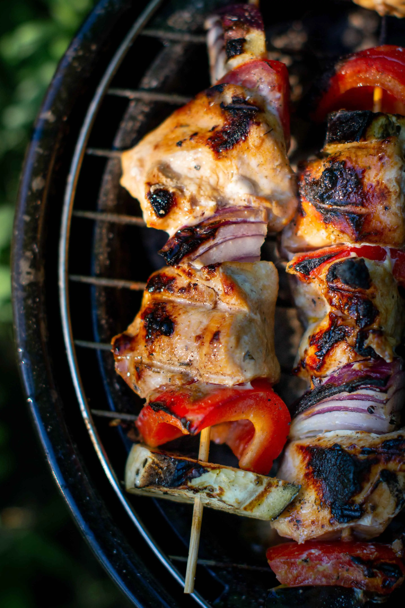
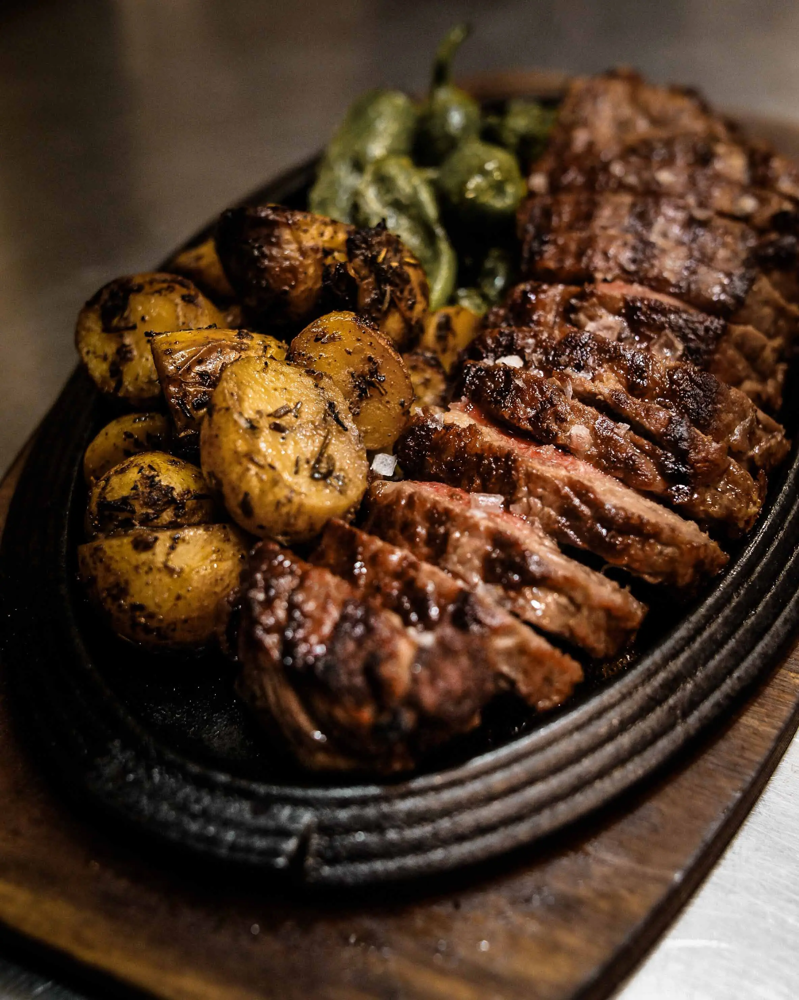
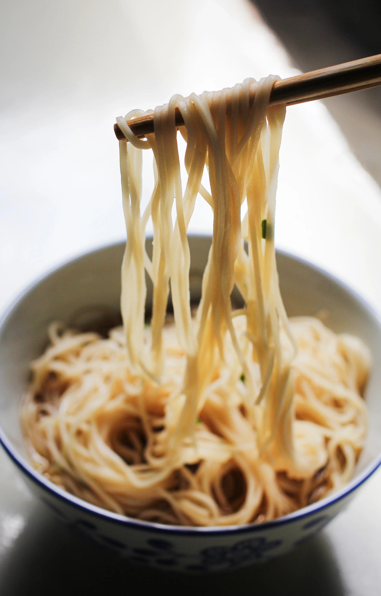
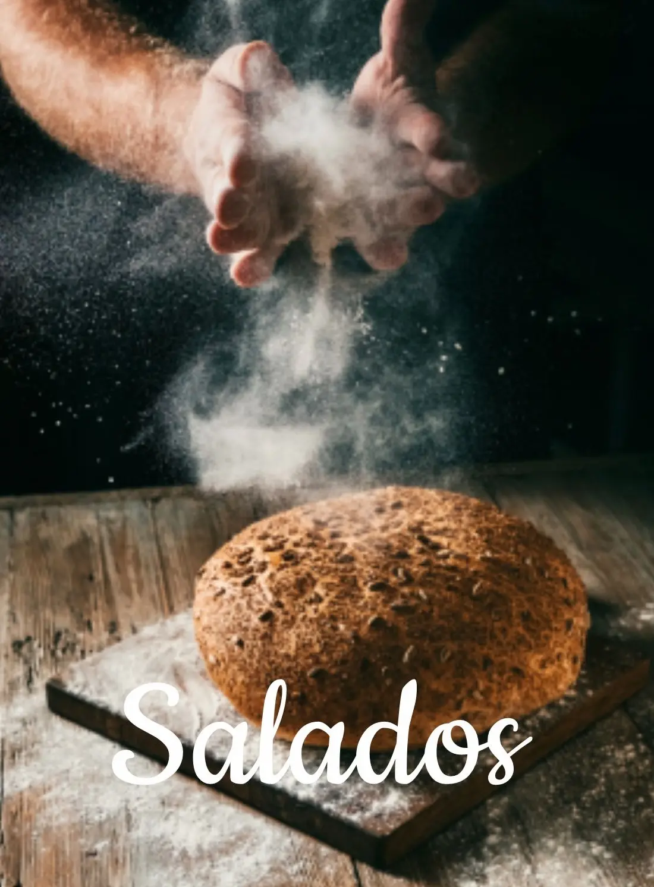

Carnes
Brochetas de pollo
Ingredientes:
- 3 pechugas de pollo
- 1 tomate grande
- 1 cebolla grande
- 1 morrón verde
- 1 morrón rojo
- 1 morrón amarillo
Preparación:
- Cortar en cubos el pollo y macerar con variedad de mostazas
- Cortar en trozos acordé a los cubos, las verduras
- Asar a la parrilla
- Servir sobre una tabla
Chef tip:
Si usas brochetas de madera, remójalas en agua por 30 minutos antes de insertar los ingredientes para prevenir que se quemen en la parrilla
Tipo de cocción:
Parilla
Bebida recomendada:
Vino blanco

Carnes
Peceto al horno con verduras
Ingredientes:
- 1 Peceto de 1.5kg
- 4 Pimientos verdes
- 2 Pimientos rojos
- 4 Papas grandes
- 4 Cebollas medianas
- 5 Dientes ajo
- Sal a gusto
- Aceite a gusto
- 1/2 Litro caldo de verduras
Preparación:
- Pinchar en el peceto e introducir los dientes de ajo para dar más sabor.
- En una sartén grande colocar un poco de aceite, poner el peceto para que se dore e ir dando vueltas para sellar hasta que esté cocido por todas partes.
- En una fuente colocar las verduras cortadas en bastones y las papas en rodajas, preparar con sal y aceite y mezclar
- Hacer lugar en el medio de las verduras y colocar el peceto, poner unos 350cm² del caldo y reservar el resto por las dudas para ir agregando.
- Colocar en el horno a 200° durante 2 horas, cada 30 minutos ir girando para que no se seque
Chef tip:
Recomendamos se puede suplantar las papas al horno por un pure mixto
Tipo de cocción:
Horno de barro / cocina tradicional
Bebida recomendada:
Vino tinto variedad malbec

Pastas
Tallarines caseros
Ingredientes:
- 1 huevo
- 100 gr de harina 0000 (aunque también se puede usar 000)
- 1 cda de aceite de oliva
- Una pizca de sal
Preparación:
- Poner la harina y la sal en un bol, integrar y hacer un hueco en el medio. Agregar el huevo y el aceite si eligen agregarle. Batir un poco con una cuchara o tenedor y unir en una masa.
- Una vez que se haya integrado todo muy bien a amasar! Amasar unos 15 o 20 minutos y dejar descansar por media hora.
- En este paso hay que estirar la masa: ya sea con máquina de pastas o con un palo de amasar el proceso es el mismo. Hay que estirar la masa, doblarla y volverla a estirar. Una y otra vez hasta que quede del grosor que estamos buscando. Si es con la máquina hay que ir bajando un número cada vez, si es con el palote hay que amasar con más fuerza!
- Se debe cortar en la forma que se prefiera, se espolvorea con harina y se deja orear unos 30 minutos
Chef tip:
Recomendamos acompañar esta receta con una salsa boloñesa
Tipo de cocción:
Cocina tradicional
Bebida recomendada:
Vino tinto variedad malbec

Panificación
Pan Casero
Ingredientes:
- 1 kg de harina 000
- Sal fina 20 g
- 500 ml de agua
- 30 g de levadura fresca
- 1 cda. de azúcar
- 30 g de grasa o aceite
Preparación:
- Lo primero es en una taza del agua tibia de la receta agregar la cucharada de azúcar, una cucharada de harina y la levadura fresca.
- Espera hasta que la levadura se active, va a crecer y a hacer burbujas, tranqui es normal.
- En una tabla o mesada, con la harina hacé una corona y espolvoréala con sal, en el centro agrega la grasa o el aceite y el fermento de la levadura (lo que preparaste en la tasa).
- Amasá con mucha energía unos 10 minutos mínimo, hasta que todos los ingredientes estén unidos y la masa esté homogénea.
- Armá un bollo y déjalo levar hasta que duplique su volumen (en un bol, por ejemplo, tapado con un repasador a temperatura ambiente).
- Poné el bollo en la mesada y sepáralo en dos, bolla de nuevo y déjalos con distancia para que tengan espacio sobre bandejas para horno apenas espolvoreadas con harina (solo un toque).
- Dejá reposar una media hora nuevamente, ya que deben seguir creciendo en volumen.
- Precalentar el horno a 200°C. Espolvoreá la superficie de los panes con harina y realiza cortes superficiales a lo ancho del pan con un cuchillo.
- Llévalos al horno y cocina unos 30 minutos.
- Cuando estén, retira y deja enfriar.
- córtalo con cuchillo tipo serrucho, ¡servilos y a disfrutar!
Chef tip:
Recomendamos hacer el corte sobre el pan, ya que sirve para que el vapor que se genera en la cocción tenga por donde salir con la presión del calor del horno.
Tipo de cocción:
Horno de barro / cocina tradicional
Bebida recomendada:
Mates

Carnes
Asado
Ingredientes:
- 1,5 kg Vacío
- Salpimentar a gusto
Preparación:
- Encendemos el fuego y una vez que las brasas estén bien encendidas desparramamos una buena capa de carbón por debajo de la parrilla, calculando el espacio que ocupará el vacío.
- Ponemos nuestro vacío con el cuero hacia abajo y le agregamos sal por encima. Dejamos en esta posición entre 30 y 40 minutos.
- Damos vuelta con una pinza (para no pinchar y que pierda sus jugos) y cocinamos durante otros 20/25 minutos.
- Una vez pasado el tiempo retiramos, cortamos en fetas de 2 a 3 centímetros de ancho.
- Servir sobre una tabla
Chef tip:
Servir sobre una rodaja de pan cansero, se lo puede acompañar con una salsa criolla
Tipo de cocción:
Parilla
Bebida recomendada:
Vino tinto variedad malbec